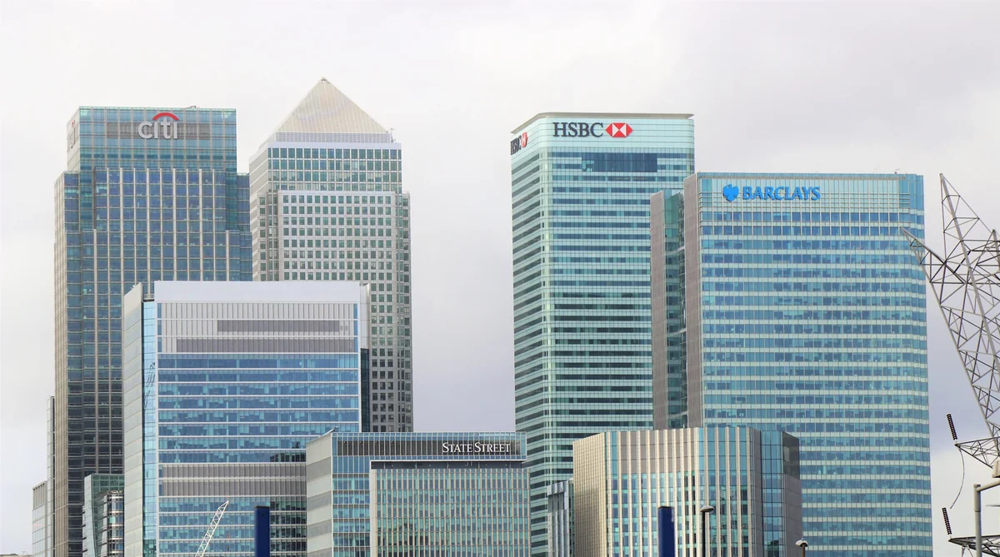
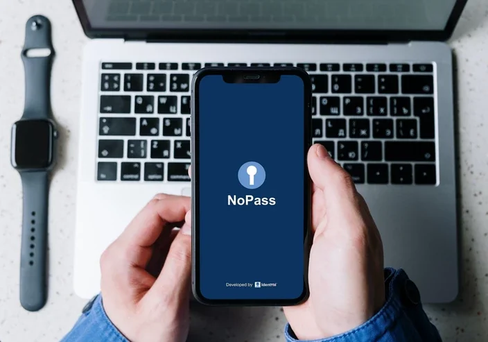

From identity theft to phishing attempts, the number of digital fraud attempts in the U.S. is up 25.07% in the first four months of 2021, compared to the last four months of 2020.
That’s according to a new report from TransUnion, which found that when looking at specific industries, digital fraud attacks against financial services companies increased 109% in the U.S. during that same period. Globally, fraud attempts in this industry were up 149%.
TransUnion defines digital fraud as any online scams or fraudulent transactions. That includes schemes where fraudsters attempt to steal personal information through social media networks and online sites and phishing attempts, which occur when cyber criminals send fake emails to you that either attempt to retrieve personal information or infect a device with malware.
While it is, to some extent, a business’ responsibility to ensure customers are protected from fraud, customers should also be responsible as well. That includes signing up for and using protections such as two-factor authentication, which generally requires users to not only enter a password, but also confirm their identity by entering a code texted or emailed to them.
Nine types of bank Frauds vs PasswordFree™️
Imposter Websites
Fake bank websites are a growing concern because hackers have become skilled at making a fake website look identical to the legitimate one. As a result, users are easily fooled into providing their login and password and this is providing the hackers a revenue stream estimated in the hundreds of millions of dollars.
PasswordFree™️ prevents imposter websites via our patented Full Duplex Authentication® (FDA), which has the server authenticate to the user first before the user enters their credentials. PasswordFree™️ also eliminates other well-known attacks such as Man-in-the-Middle, and Man-in-the-Browser because the hacker cannot replicate the server authentication step and phishing email since there is no password required. FDA eliminates customer friction by making the login process a two-touch secure process on the device.
Account Takeover Fraud (ATF)
PasswordFree™️ prevents ATF by adding a biometric step to the login process when the account holder logs in to their account. The biometric step replaces the password. PasswordFree™️ leverages Public Key Infrastructure (PKI) security during the login process. PKI is the same security certificate standard that EMV chip technology utilizes for authenticating credit card transactions. PasswordFree™️ also leverages the decentralized biometrics on smartphones and PCs to eliminate any doubt about who is logging in. All communications are in-band and encrypted so that malware on the account holder’s device cannot intercept messages.
Friendly Fraud
This type of fraud occurs when an account holder shares their login credentials with a friend. The friend then logs in to the account holder’s account and executes Real-time Payments (RTP) type transactions that move funds to another financial organization (bank, credit union, fintech) such as a wire transfer or Zelle/CashApp transactions. Once the transactions have been completed the friend notifies the account holder and at that point the account holder logs into their bank account and then calls the bank reporting ATF.
PasswordFree™️ eliminates Friendly Fraud by eliminating passwords and SMS security codes. PasswordFree™️ replaces the account holders’ login credentials with an encrypted digital certificate on the account holder’s device and requires a biometric step during the login process on that specific device. The biometric step eliminates any doubt about who logged in and who executed the transaction.
Transaction Fraud
Fraudulent transaction activity is increasing, such as real-time payments (RTP) fraud. PasswordFree™️ can eliminate this type of fraud by prompting the account holder to perform a biometric step on their smartphone or PC to execute transactions. The NoPass™ transaction authentication process is similar to PSD2 transaction authentication in Europe where the account holder receives a message on their smartphone to approve an online merchant transaction before it is executed. ATM transactions can also leverage the same process to approve certain ATM transactions.
ATM Fraud
ATM card skimming fraud can be prevented using PasswordFree™️ by replacing passwords or Pin numbers with a biometric step on the account holder’s smartphone or PC. When an account holder inserts their card into an ATM, KAL software sends a message to PasswordFree™️ to prompt the account holder to perform a biometric step to authenticate their identity.
Call Center Fraud
Account holder impersonation is on the rise for bank call center operations where fraudsters can defeat a bank’s security protocols that validate the account holder’s identity such as security questions and voice analytics. PasswordFree™️ can be integrated with existing call center technology to prompt the account holder to perform a biometric step on their smartphone or PC to authenticate their identity while they are in queue waiting to speak with a bank customer service representative.
Person to Person (P2P) Identity Verification Fraud
As banks move to more real-time virtual contact methods to increase communications with account holders such as outbound telephone calls and web meetings such as Zoom calls, the need to verify the account holder’s identity in real-time is increasing. PasswordFree™️ provides the capability to push a PasswordFree™️ message to the account holder to validate their identity by executing a biometric step on their smartphone or PC. A NoPass™ icon would be added to the customer account profile app that the bank employees would click on that would send the PasswordFree™️ identity authentication message to the account holder to authenticate.
This concept can also be leveraged in a bank’s branch operations to authenticate account holders when they arrive at a branch to authenticate their identity. Today, bank employees ask account holders to show their driver's licenses as proof of their identity. The problem with driver's licenses is they are easily fabricated by fraudsters. PasswordFree™️ biometric step eliminates any doubt about who they are.
Shared Account Access Fraud (SAAF)
SAAF fraud occurs in commercial and retail bank accounts where you have multiple parties accessing the same bank account and executing financial transactions. PasswordFree™️ provides the ability to deploy a concept called “Two Party Integrity” that requires a second party to approve the first party’s transactions. In this concept, PasswordFree™️ would push a transaction authentication message to the second party to approve the first party’s transaction by executing a biometric step on their smartphone or PC.
Shared Branching Fraud
In the credit union industry, there is a business concept called Shared Branching (SB) which allows account holders to perform transactions at a credit union branch that is not part of their credit union. This process requires a lot of real-time human interaction between the two credit unions to authenticate the member and their transactions. SB transactions are considered high risk but are a necessity for account holders that require this level of mobility and customer service flexibility.
A federated version of PasswordFree™️ provides the ability to perform identity verification in real-time leveraging the biometric step and PKI to authenticate the account holder’s identity when the account holder enters another credit union. This concept would require both credit unions to offer PasswordFree™️ to their account holders. An encrypted PasswordFree™️ authentication token message would be sent between the two credit unions in this process that will validate the account holder’s identity.
